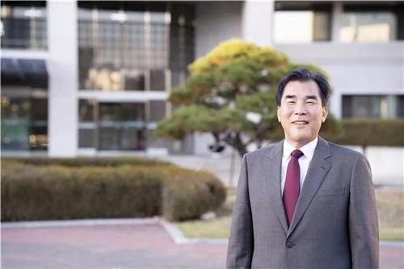

한국체대 총장 "병역특례, 학생 선수 진로 위해 매우 필요" : 네이트 스포츠

문원재 한국체육대 총장이 국회 교육위원회 국정감사에서 병역 특례 제도에 대해 “매우 필요하다고 생각한다”고 밝혔다.
문 총장은 16일 병역특례 제도에 대한 질의에 “운동하는 학생들에게 있어서는 (병역특례가) 진로를 위해 필요하다”며 이같이 말했다.
이어 “학생들의 진로나 선수들의 여러 종목마다 차이도 있다”면서도 “일괄적으로 적용하기보다는 검토가 필요하지 않을까 생각한다”고 언급했다.
문 총장은 ‘국민 다수 여론은 폐지까지는 아니더라도 축소는 돼야 하지 않느냐는 의견이 있다’는 취지의 추가 물음에도 “국민 여론에 조금 동의하지만 검토가 필요하지 않을까”라고 재차 답했다.
다른사람들은 가도 문제없어서 보냄?